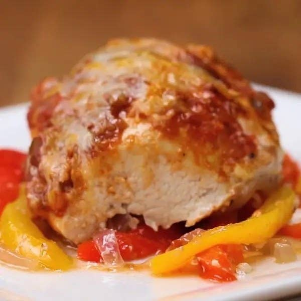
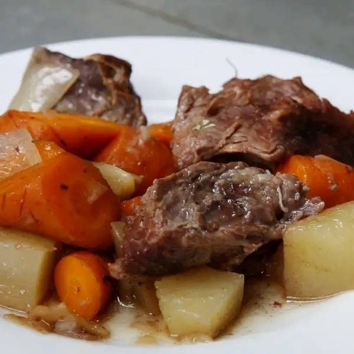
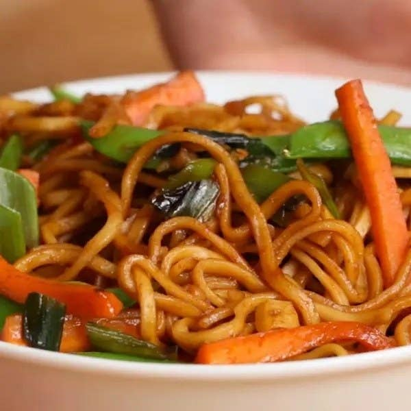

3 Easy Dinner Ideas For When You're Not Sure What To Make
1. Fajita Parchment-Baked Chicken

Wrap up a chicken breast and your favorite fajita veggies and seasonings in a parchment packet for fool-proof
cooking and easy clean-up. This recipe serves one, but can easily be scaled up to feed a crowd or meal prep for
the week.
Ingredients
- 1 chicken breast
- ½ red pepper, sliced
- ½ yellow pepper
- ¼ red onion, sliced
- 3 tablespoons salsa
- 1 teaspoon taco seasoning
- 1 tablespoon mexican cheese blend
- 1 tablespoon olive oil
- salt, to taste
- pepper, to taste
Preparation
- Preheat oven to 400°F (200°C).
- Fold the parchment paper in half, then open up.
- Thinly slice the peppers and onion and lay them on one half of the parchment paper.
- Drizzle on oil and sprinkle on salt & pepper.
- Lay the chicken on the peppers. Season with taco seasoning, salt and pepper, and spoon on salsa. Top with
cheese.
- Fold the parchment paper over the chicken, and cinch the paper together by folding it over itself along the
edges.
- Bake for 25-30 minutes or until internal temperature of chicken reaches 165˚F (75˚C).
- Enjoy
2. The Best Ever Slow Cooker Pot Roast

Let the slow cooker do the work of making dinner while you go about your day. This pot roast is super flavorful,
thanks to the addition of a packet of dried onion soup mix. Serve the meat and veggies over egg noodles or rice.
Ingredients
- 3 lb chuck roast(1.5 kg)
- salt, to taste
- pepper, to taste
- 1 oz dried onion soup mix(30 g)
- 1 onion, diced
- 3 gold potatoes, diced
- 3 large carrots, chopped
- ½ cup water(120 mL)
Preparation
- Place the chuck roast in a 7-quart (6 ½ liters) slow cooker and season with salt and pepper.
- Sprinkle the onion soup pack and top with vegetables and water.
- Cook on low for 8 hours, or high for 4-5 hours.
- Enjoy!
3. Veggie Garlic Noodles

Get your veggies in with this delicious and quick noodle stir-fry. Green onions and garlic pack a flavor punch,
while the brown sugar and soy tie everything together in a sweet and savory sauce.
Ingredients
- 2 tablespoons vegetable oil(30 mL)
- 5 cloves garlic, minced
- 4 green onions, sliced, divided
- 2 carrots, cut into matchsticks
- 1 cup snap peas(100 g)
- 2 tablespoons brown sugar
- 3 tablespoons soy sauce
- 9 oz dried rice noodles(250 g), cooked
Preparation
- Heat the vegetable oil in a large skillet over medium heat. Add the garlic and 3 green onions and cook for
2–3 minutes, until fragrant and tender. Add the carrots and snap peas, then stir in the brown sugar and soy
sauce.
- Add the noodles and toss for a couple of minutes, until the noodles are well-coated and the vegetables are
tender. Season with salt and pepper.
- Serve immediately, garnished with the remaining green onion.
- Enjoy!